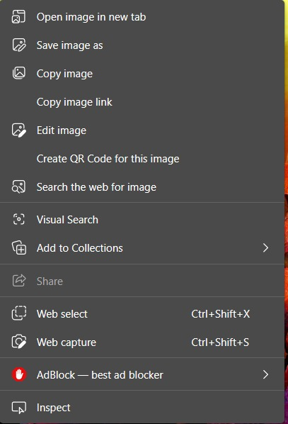
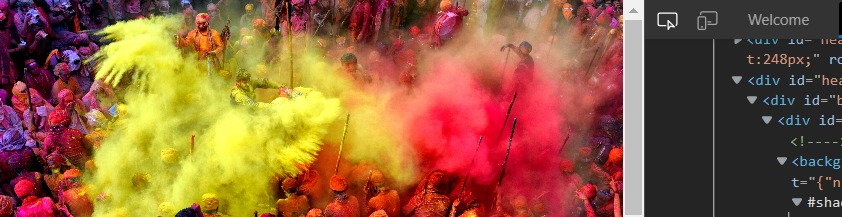
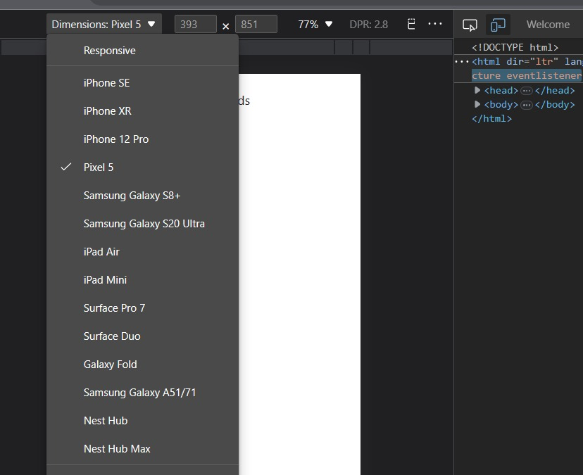

How to Open Emulated Mobile View using Developer Option Inspect
Follow these step-by-step instructions to open Emulated Mobile View in Google Chrome:
- Open the webpage that you want to view in Emulated Mobile View.
- Right-click anywhere on the page and select "Inspect" from the dropdown menu. Alternatively, you can press Ctrl+Shift+I (Windows) or Command+Option+I (Mac).

- The Developer Tools panel will open up. Click on the toggle device toolbar icon or press Ctrl+Shift+M (Windows) or Command+Shift+M (Mac) to open the Emulated Mobile View.

- The Emulated Mobile View will open up, allowing you to view the webpage as it would appear on a mobile device. You can also choose different device models, screen sizes, and orientations using the dropdown menu (shown in the red box below).

After that start rewardsleet searches or easy method you can install my other extension Mobile veiw switcher from edge addon store
Download